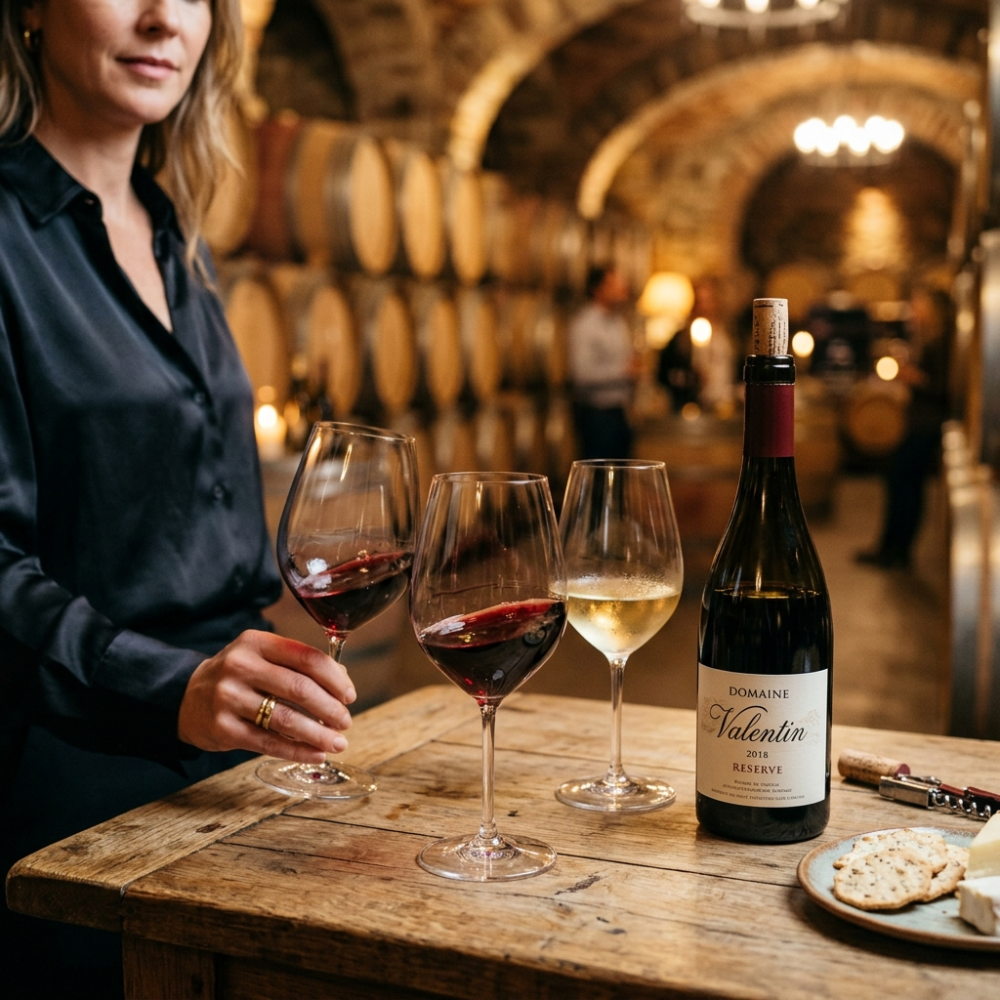
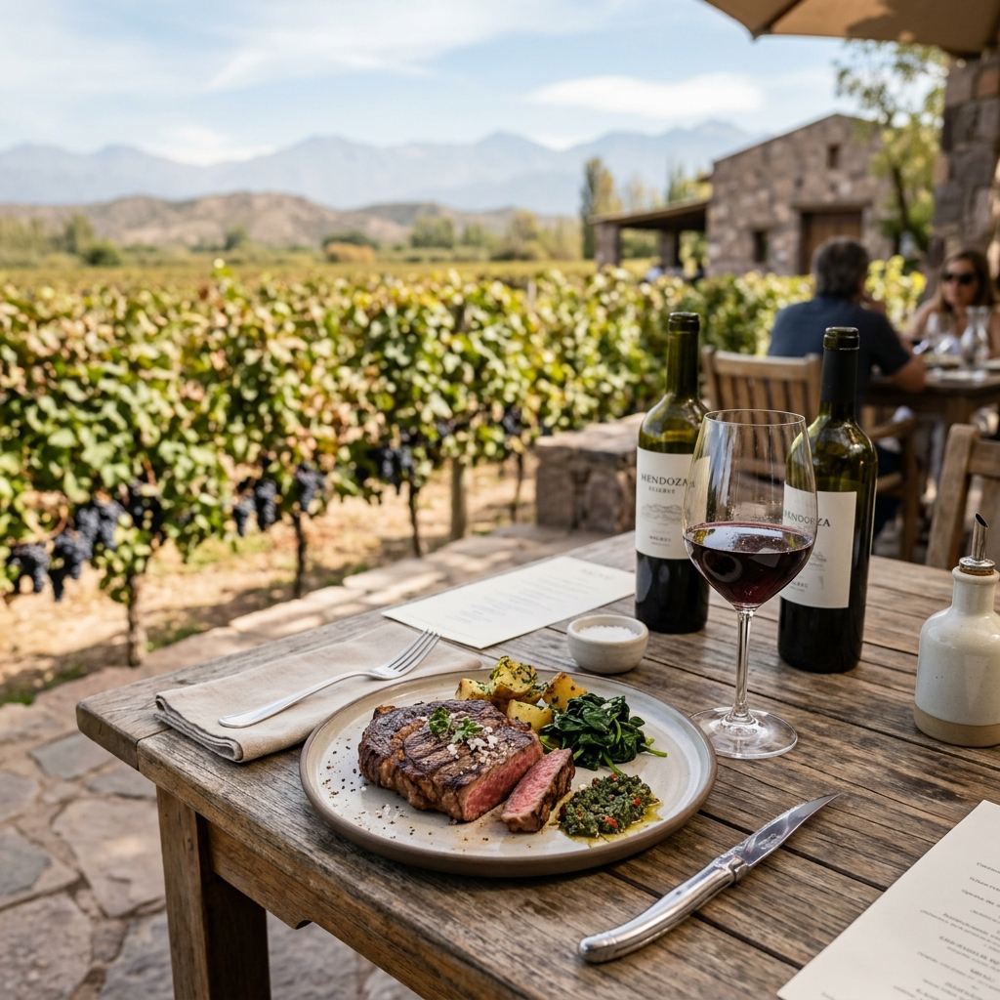
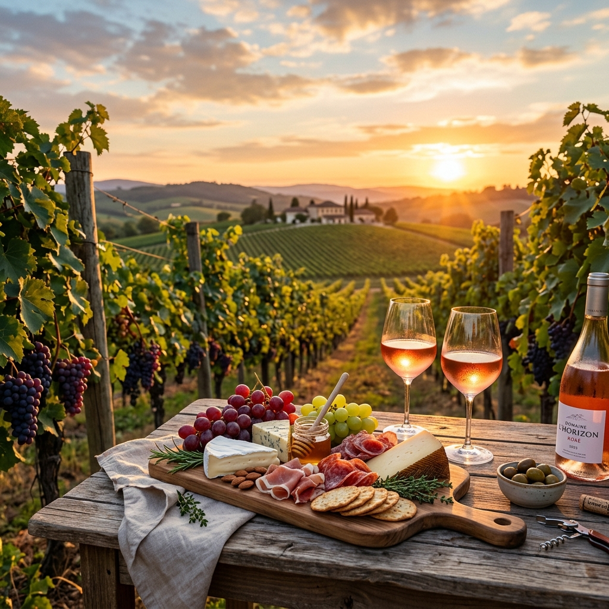

Brisas del Mar
Vinos frescos con influencia oceánica
Ubicación
Costa
Especialidad
Pinot Noir, Albariño
Horario
10:00 a 18:00 hs
Experiencias y Actividades

Catas
Brisa y Copas
Cata dirigida de varietales marítimos (Albariño, Pinot Noir) en nuestra terraza costera.

Almuerzo
Mar y Terruño
Almuerzo de mariscos y pescados frescos, maridado con nuestros mejores vinos blancos.

Media Tarde
Sunset Atlántico
Atardecer de música en vivo, vinos frescos y picada de mar frente al océano.
El Viento y la Uva
Brisas del Mar desafía las reglas tradicionales de la vitivinicultura en la región, plantando vides a escasos kilómetros del mar. El resultado son vinos con una acidez vibrante, salinidad sutil y una frescura inigualable.
"El mar le otorga al vino una salinidad e identidad que no se puede reproducir en ningún otro terroir."— Isabel Costa, Enóloga